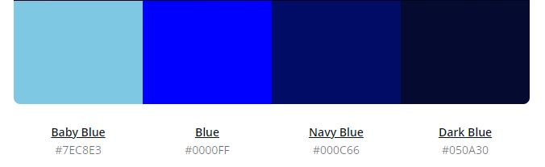

Color Pallete
Reference
Header background color: #050a30
Main background color: #fff
Footer background color: #050a30
Active link background color: #7ec8e3
Site name and nav font color: #000c66
Header background color: #050a30
Main background color: #fff
Footer background color: #050a30
Active link background color: #7ec8e3
Site name and nav font color: #000c66